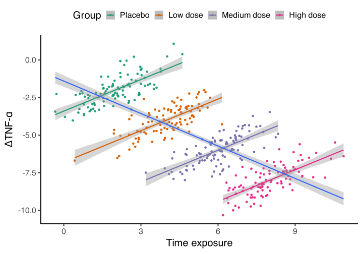
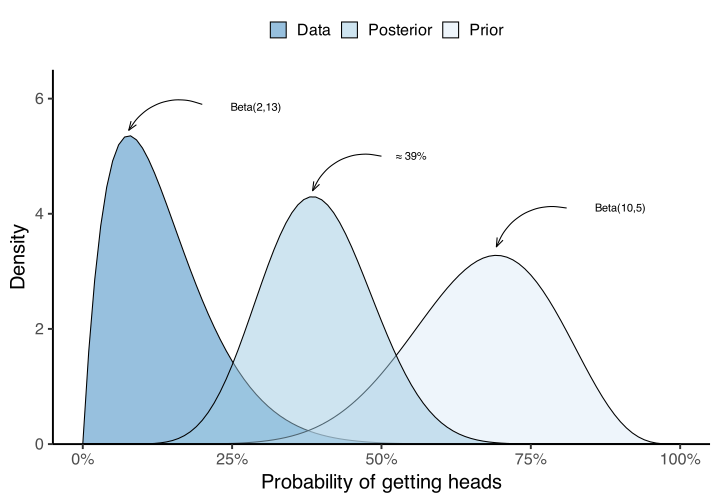

![]()

Hello stranger
First of all, welcome to the first post of “Bayesically Speaking” (which, in case you haven’t noticed, is a word play between “Basically Speaking” and the (hopefully) well-known Bayes’ theorem), and although the web is offline at the time of writing this article, I find myself following the advice of all those people who encouraged me to trust my instinct and dare to do what I have always wanted: to be able to transmit the thrill of using science as a tool to know and understand the reality that surrounds us and that we perceive in a limited way through our senses.
For years, my interests have revolved around understanding the world through the lens of statistics, particularly as a tool to better understand and quantify the relationships between the moving parts that make up many health outcomes. Another aspect that I find fascinating is how certain variables can go unnoticed when viewed separately, but when viewed together can have radically different behaviors.
Code
sim_data <- simulate_simpson(n = 100,
difference = 2,
groups = 4,
r = .7) |>
as.data.table()
sim_data[, Group := factor(Group,
levels = c("G_1","G_2","G_3","G_4"),
labels = c("Placebo", "Low dose", "Medium dose", "High dose"))]
ggplot(sim_data, aes(V1, V2, col = Group)) +
geom_point() +
geom_smooth(method = "lm") +
geom_smooth(method = "lm", aes(group = 1, col = NULL)) +
scale_color_brewer(type = "qual", palette = 2) +
labs(x = "Time exposure", y = expression(Delta*"TNF-"*alpha)) +
theme_classic() +
theme(legend.position = "top")
The statistics toolbox
Within the statistics toolbox, we have commonly used tests like t-tests, ANOVA, correlations, and regression. These methods have their advantages, as they are relatively easy to use and understand. However, like any other tool, they also have their limitations. For instance, they struggle with scenarios involving variables with asymmetric distributions, non-linear relationships, unbalanced groups, heterogeneous variance, extreme values, or repeated measurements with loss of follow-up.
To address these limitations, non-parametric alternatives have been developed. These approaches offer flexibility but make it challenging to extrapolate inferences to new data due to the lack of distributional parameters. Other models, such as neural networks or random forest models, provide assistance when analyzing data with special properties. However, they often sacrifice simplicity and interpretability for increased flexibility and are commonly referred to as “black box” models.

Despite the availability of these alternative methods, there is still a pressing need to incorporate previous knowledge and align with the way human understanding is constructed. As humans, our perception of the world is shaped by experiences and prior beliefs. This is where Bayesian statistics come into play.
Bayesian statistics offer several advantages over classical statistics (also known as “frequentist”). Firstly, they provide a coherent framework for incorporating prior information into our analysis, enabling us to update our beliefs systematically. Additionally, Bayesian statistics allow us to quantify uncertainty through probability distributions, offering a more intuitive and interpretable way to express our findings and the degree of certainty.
The toss of a coin
Let’s consider the following example: Imagine we have a belief that when tossing a coin, there is a higher probability of it landing on heads. Our prior knowledge stems from a previous experiment where, out of 15 coin tosses, 10 resulted in heads. This implies a calculated probability of \(\frac{10}{15} \approx 0.66\) based on the previous data.
With this information we decide to explore further, we conduct our own experiment. To our astonishment, out of 15 tosses, we observe un unexpected outcome: 13 tails and only 2 heads! This result suggests that the probability of getting heads based solely on our new data is a mere \(\frac{2}{15} \approx 0.13\). However, it would be unwise to dismiss the prior evidence in light of these conflicting results. Incorporating these findings into our body of knowledge becomes even more crucial as we strive to gain a deeper understanding of the combined effect.
Computing the posterior
To estimate the posterior probability of getting heads after tossing a coin, we can use the Bayesian framework. Let’s denote the probability of getting heads in a coin toss as \(P(H)\).
According to the information provided, we have the prior probability of \(P(H)\) estimated from an independent experiment as 10 heads out of 15 tosses. This can be written as a Beta distribution:
This symbol “\(\sim\)” means distributed as
\[ P(H) \sim Beta(10, 5) \]
Here, the Beta distribution parameters are (10, 5) since we had 10 heads and 5 tails in the prior experiment.
Now, a new experiment with the same 15 tosses gives us 2 heads. To update our prior belief, we can use this information to calculate the posterior probability which can be expressed as follow:
This symbol “\(\propto\)” means proportional to
\[ P(H | Data) \propto P(Data | H) \times P(H) \]
Which is equivalent as saying:
\[ Posterior \propto Likelihood \times Prior \]
To calculate the posterior probability, we need to normalize the product of the likelihood and prior, which involves integrating over all possible values of H. However, in this case, we can use a shortcut because the prior distribution is conjugate to the binomial distribution, so the posterior distribution will also follow a Beta distribution:
The product of both the prior and the likelihood maintains the same shape as the final posterior probability distribution, indicated by the “proportional to” (\(\propto\)) in the previous equation. However, this raw product does not sum up to 1, making it an improper probability density function. To rectify this, the raw product needs to be normalized using integration or simulation in most cases.
\[ P(H | Data) \sim Beta(10 + 2, 5 + 13) \]
After incorporating the data from the new experiment, the parameters of the Beta distribution become (12, 18) since we had 2 heads and 13 tails in the new experiment, meaning 12 heads and 18 tails in total.
When we choose a Beta distribution as our prior belief and gather new data from a coin toss, an intriguing property emerges: the posterior distribution also follows a Beta distribution. This property, known as conjugacy, offers a valuable advantage by simplifying calculations. It acts as a mathematical shortcut that saves time and effort, making the analysis more efficient and streamlined.
To calculate the posterior probability of getting heads, we can consider the mode (maximum) of the Beta distribution, which is \((a - 1) / (a + b - 2)\):
\(\begin{aligned} P(H | Data) &= (12 - 1) / (12 + 18 - 2) \\ &= 11 / 28 \\ &\approx 0.39 \end{aligned}\)
Therefore, the posterior probability of getting heads is approximately 39% when we consider all the available evidence.
Code
# Prior and Likelihood functions
data = function(x, to_log = FALSE) dbeta(x, 2, 13, log = to_log)
prior = function(x, to_log = FALSE) dbeta(x, 10, 5, log = to_log)
# Posterior
posterior = function(x) {
p_fun = function(i) {
# Operation is on log-scale merely for computing performance
# and minimize rounding errors giving the small nature of
# probability density values at each interval.
i_log = data(i, to_log = TRUE) + prior(i, to_log = TRUE)
# Then transformed back to get probabilities again
exp(i_log)
}
# Then we integrate using base function `integrate`
const = integrate(f = p_fun,
lower = 0L, upper = 1L,
subdivisions = 1e3L,
rel.tol = .Machine$double.eps)$value
p_fun(x) / const
}
## Plotting phase
### Color palette
col_pal <- c(Prior = "#DEEBF7",
Data = "#3182BD",
Posterior = "#9ECAE1")
### Main plotting code
ggplot() +
#### Main probability density functions
stat_function(aes(fill = "Data"), fun = data, geom = "density", alpha = 1/2) +
stat_function(aes(fill = "Prior"), fun = prior, geom = "density", alpha = 1/2) +
stat_function(aes(fill = "Posterior"), fun = posterior, geom = "density", alpha = 1/2) +
#### Minor aesthetics tweaks
labs(fill = "", y = "Density", x = "Probability of getting heads") +
scale_fill_manual(values = col_pal, aesthetics = "fill") +
scale_x_continuous(labels = scales::label_percent(),
limits = c(0,1)) +
scale_y_continuous(expand = c(0,0), limits = c(0, 6.5)) +
see::theme_modern() +
theme(legend.position = "top",
legend.spacing.x = unit(3, "mm")) +
#### Arrows
geom_curve(aes(x = .81, y = 4.1, xend = .69232, yend = 3.425), curvature = .4,
arrow = arrow(length = unit(1/3, "cm"), angle = 20)) +
geom_text(aes(x = .9, y = 4.1, label = "Beta(10,5)")) +
geom_curve(aes(x = .2, y = 5.9, xend = .07693, yend = 5.45), curvature = .4,
arrow = arrow(length = unit(1/3, "cm"), angle = 20)) +
geom_text(aes(x = .29, y = 5.85, label = "Beta(2,13)")) +
geom_curve(aes(x = .5, y = 5, xend = .3847, yend = 4.4), curvature = .4,
arrow = arrow(length = unit(1/3, "cm"), angle = 20)) +
geom_text(aes(x = .55, y = 5, label = "≈ 39%"))
Practical implications
This example truly showcases the power of Bayesian statistics, where our prior beliefs are transformed by new evidence, allowing us to gain deeper insights into the world. Despite the unexpected twists and turns, Bayesian inference empowers us to blend prior knowledge with fresh data, creating a rich tapestry of understanding. By embracing the spirit of Bayesian principles, we open doors to the exciting potential of statistics and embark on a captivating journey to unravel the complexities of our reality.
What’s even more fascinating is how closely the Bayesian inference process aligns with our natural way of learning and growing. Just like we integrate prior knowledge, weigh new evidence, and embrace uncertainty in our daily lives, Bayesian inference beautifully mirrors our innate cognitive processes. It’s a dynamic dance of assimilating information, refining our understanding, and embracing the inherent uncertainties of life. This remarkable synergy between Bayesian inference and our innate curiosity has been a driving force behind the rise and success of Bayesian statistics in both theory and practice.
As Gelman and Shalizi (2013) eloquently states, “A substantial school in the philosophy of science identifies Bayesian inference with inductive inference and even rationality as such, and seems to be strengthened by the rise and practical success of Bayesian statistics.”
However, it’s important to acknowledge that while advanced statistical tools offer incredible possibilities, they also come with their own set of limitations. To make the most of these tools, we need to understand their boundaries and make informed choices about their applications.

From past to future
Imagine a time not too long ago when Bayesian statistics were not as prevalent as they are today. The computational challenges posed significant hurdles, limiting our ability to fully embrace their potential. But thanks to the rapid advancement of computing power and simulation techniques, the statistical landscape has undergone a revolution. We now find ourselves in an exciting era where complex Bayesian analysis is accessible to all. It’s like having a superpower in the palm of our hands—an empowering time where our statistical prowess can thrive and conquer new frontiers.
As passionate self-learners on this thrilling statistical journey, even without a formal statistician’s hat, we can’t help but feel an overwhelming excitement to share the vast potential of these tools for unraveling real-world phenomena. Delving into the world of statistics, especially through the lens of Bayesian inference, opens up a universe of captivating possibilities. By melding prior knowledge with fresh evidence and embracing the enigmatic realm of uncertainty, we can uncover profound insights into health, well-being, and the wondrous phenomena that shape our lives.
So, fellow adventurers, let’s ignite our curiosity, embrace our thirst for knowledge, and embark on this exhilarating voyage together. With statistics as our compass, we will navigate the complexities of our reality, expanding our understanding and seizing the extraordinary opportunities that await us.
Get ready to experience a world that’s more vivid, more nuanced, and more awe-inspiring than ever before. Together, let’s dive into the captivating realm of statistics, fueled by enthusiasm and a passion for discovery.
References
Citation
@misc{castillo-aguilar2023,
author = {Castillo-Aguilar, Matías},
title = {Welcome to {Bayesically} {Speaking}},
date = {2023-06-10},
url = {https://bayesically-speaking.com//posts/2023-05-30 welcome},
doi = {10.59350/35tc8-qyj10},
langid = {en}
}